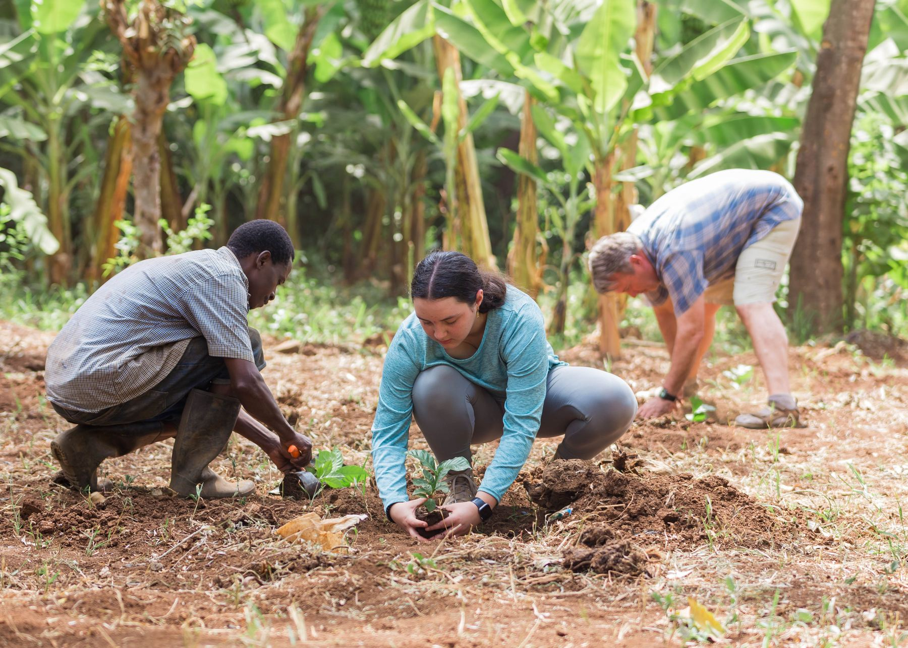

Apart from depending on funds from donors and well-wishers, Habari Foundation is creating other means of generating extra income for the children by investing in small projects — involving homeless children themselves, and local and international volunteers.

In Tanzania, Arabica coffee mostly grows on the northern slopes of Mount Kilimanjaro and Mount Meru, under the shade of banana plants. That shade gives particular aromatic hints to the coffee of this region.
The coffee project in Machame village was established in 2020 with cultivation of 25 pits. It aims to support primary schools and families in the village by providing employment and a source of income through production and sale of the coffee.
The project is managed by a local community-based organization in collaboration with Habari Foundation. It received technical support from experts in agriculture and coffee production for the pilot phase.
As a strong advocate for sustainable tourism, we offer visitors the chance to make a difference in the communities they visit. Planting trees connects travellers with the land — showing that they did not only enjoy their adventure but also made a lasting difference to the host community and the world.
We also do vertical gardening around the compound for children’s nutrition. Excess produce we sell nearby. Vegetables include tomato, green pepper, eggplant and spinach.
Join a charity tour